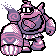
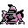

#184
Golurk
GroundGhost
Its massive frame flies by venting energy below Runes glow when its power peaks
Base stats Total 428
HP89
Attack124
Defense80
Speed55
Special80
Details
- Species
- Automation
- Height
- 9'02"
- Weight
- 727.5 lb
- Catch rate
- 90
- Base exp
- 169
- Growth
- Medium Slow
Level-up moves
LevelMoveType
StartTackleNormal
StartRock ThrowRock
Lv 18Defense CurlNormal
Lv 23Night ShadeGhost
Lv 31DigGround
Lv 31Shadow BallGhost
Lv 33Mega PunchNormal
Lv 40EarthquakeGround
Lv 45Hyper BeamNormal
Evolution
Evolves from Golett
Where to find
Not found in the wild — evolve, trade or catch it elsewhere.
TM / HM
TM01 Mega PunchTM05 Mega KickTM06 ToxicTM07 Shadow BallTM08 Body SlamTM09 Take DownTM10 Double-EdgeTM13 Ice BeamTM15 Hyper BeamTM22 SolarbeamTM24 ThunderboltTM26 EarthquakeTM28 DigTM29 PsychicTM32 Double TeamTM33 ReflectTM36 SelfdestructTM44 RestTM48 Rock SlideTM50 SubstituteHM02 FlyHM04 StrengthHM05 Flash